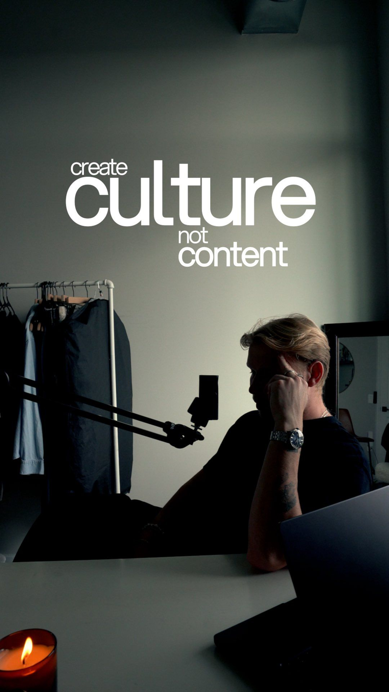
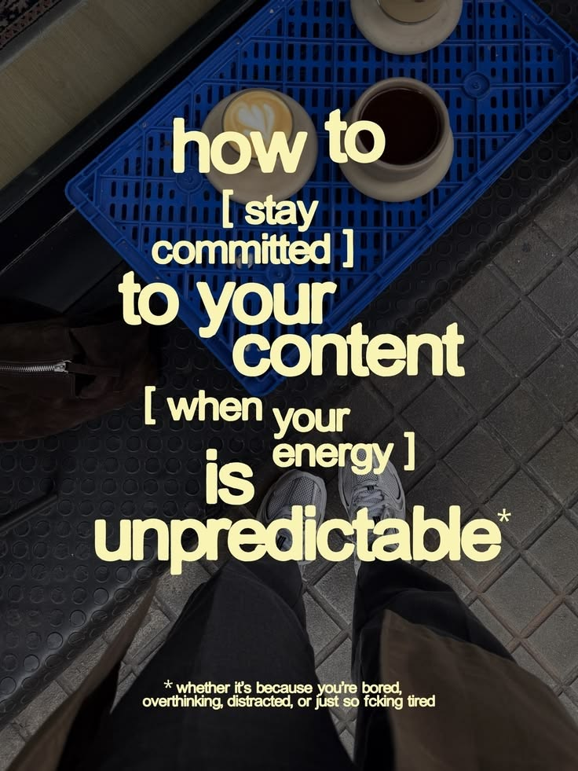

Deux idées tirées de tes références. Imbrication : des mots de tailles très différentes qui s'emboîtent, les petits mots logés dans les creux des grands. Escalier : une grotesque grasse en minuscules, très serrée, des lignes décalées, des crochets et une note de bas de page. Les textes viennent de tes vidéos (affiche FAKHOMIES, transcription de la vidéo 2).

